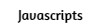

|  |
|---|
This page is my first website I have ever made. It was an assignment from my CSC 106 class, and it was fun making this website. I learned how to make this website from lessons from Khan Academy, and my CSC 106 class. View my other pages if you want to learn more about me and my website!